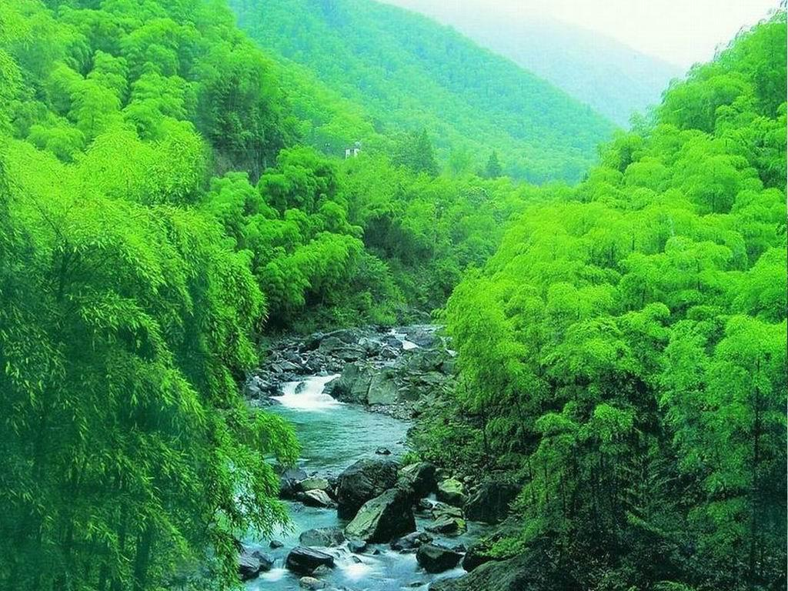
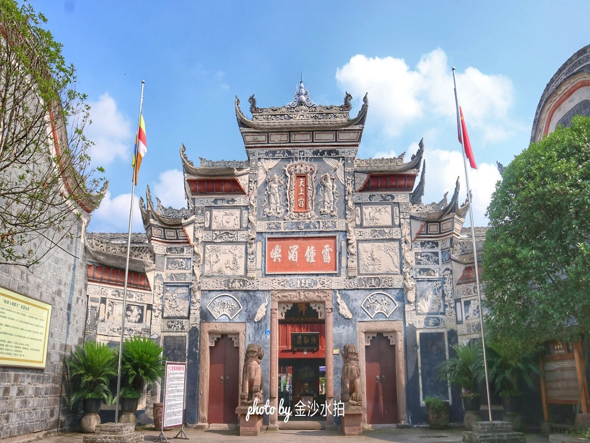
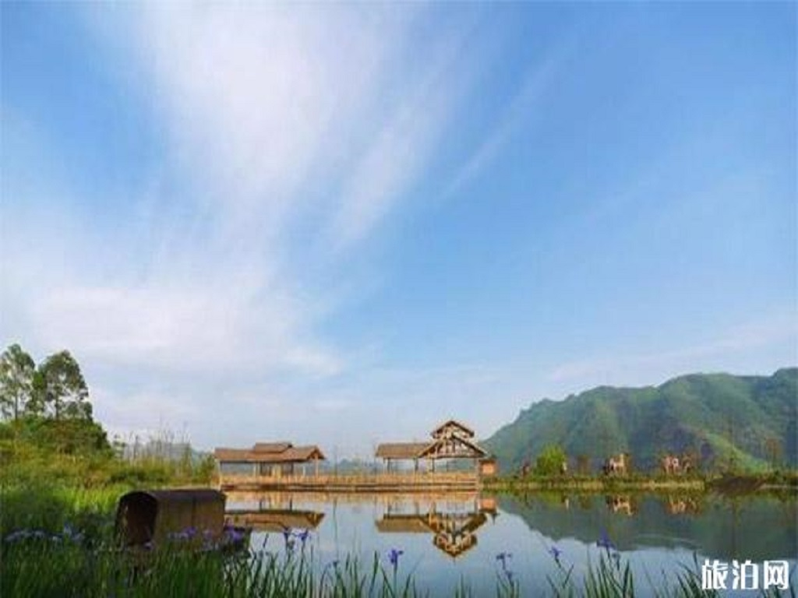
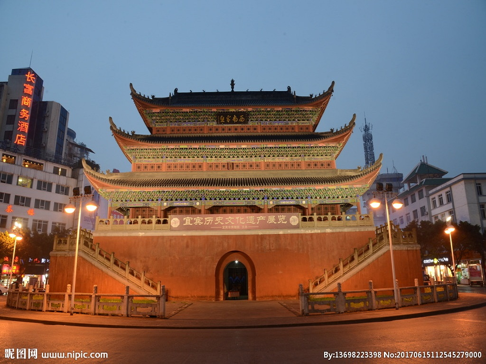
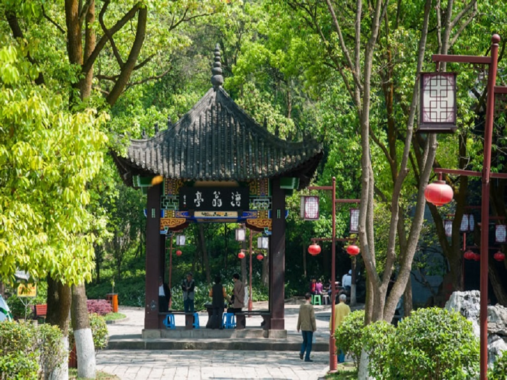

@QA.png)
城市美景
-
蜀南竹海
地址：四川省宜宾市长宁县竹海镇蜀南竹海是中国最美十大森林，是世界上集中面积最大的天然竹林景区，独特的地理位置，造就了“云山竹海，天上人间”，是世界罕见，中国唯一的集竹林，山水，湖泊，瀑布，古庙为一体的旅游胜地。 蜀南竹海的植被覆盖率达92.4%，景区内绿色怡人、空气清新，是一座天然的绿色大氧吧。
-
兴文石海
地址：四川省宜宾市兴文县兴文石海是位于四川省宜宾市兴文县,是国内发现和研究天坑的地方，也是研究西南地区喀斯特地貌的典型地区之一。 公园内各类地质遗迹丰富、自然景观多样、优美，历史文化底蕴丰厚，各类地质遗迹与独特的僰人历史文化和丰富多彩的苗族文化共同构成了一幅完美的自然山水画卷。
-
李庄古镇
地址：四川省宜宾市翠屏区李庄坝李庄古镇位于四川省宜宾市翠屏区李庄坝, 因镇域有一天然大石柱俗名“李庄"而得名，地形平坦。 李庄古镇被誉为“万里长江第一古镇”,是四川省历史文化名镇、国家级历史文化名镇。2022年6月,李庄古镇入选“2021—2025年中国建筑学会科普教育基地”依托单位名单 2022年9月,被评为四川省首批省级文明旅游示范单位 。
-
石菊古地
地址：四川省宜宾市兴文县石海镇石菊古地景区与兴文石海景区毗邻,占地600余亩,景区核心面积2平方公里,分为“乡土田园体验区”“乾坤潭休闲区”“石菊花海观赏区”“明代苗族古村落”四大功能区,石菊古地景区为国家AAAA级旅游景区、红色旅游经典景区、爱国主义教育基地。
-
宜宾大观楼
地址：四川省宜宾市翠屏区西街宜宾大观楼,又名谯楼,位于四川省宜宾市翠屏区西街2号,占地约650平方米。谯楼始建于明嘉靖年间,后毁于兵火。清乾隆二十年(1765年)重建，因其面临滇池，远望西山，尽揽湖光山色而定名为大观楼。宜宾大观楼因形似北京的天安门，在当地有“小天安门”之称。
-
流杯池公园
地址:四川省宜宾市岷江东路4号宜宾市流杯池公园位于宜宾市岷江东路4号,国家AAAA级旅游景区,是四川省著名的名胜古迹公园，四川省重点公园。 园内著名景点流杯池是保存完好的宜宾古八景之一，也是现存最完好的酒文化发祥地之一。池取“曲水流觞”之意，吸引了古今不少名人雅客前来饮酒赋诗。